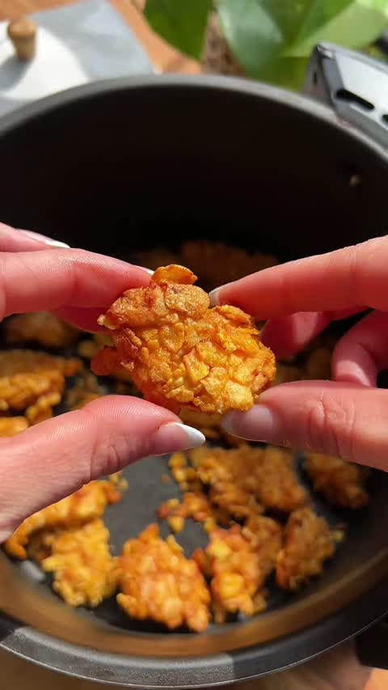
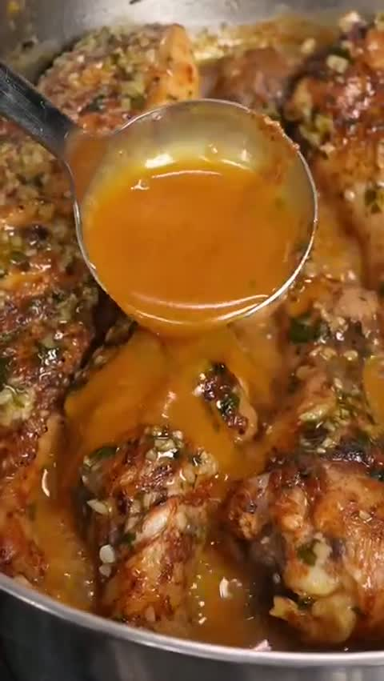
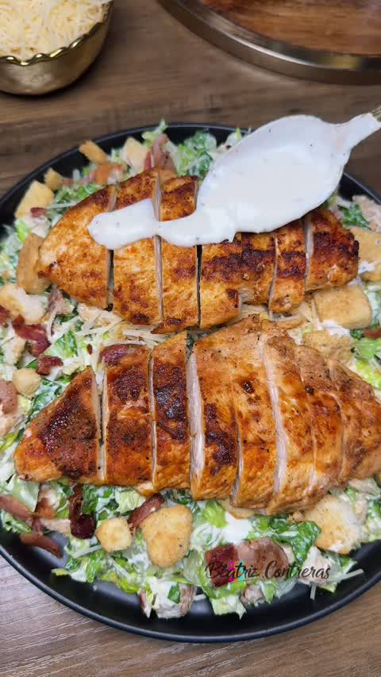
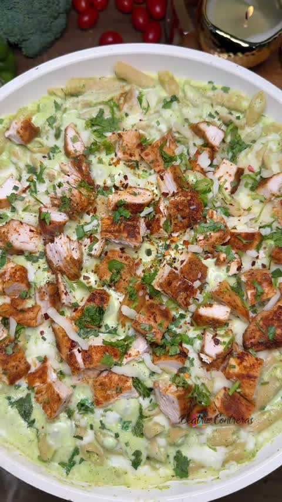

Buenas noticias: las recetas ya están deliciosas y son variadas. Lo que falta es que antojen en pantalla. Acá está el qué y el cómo.
Estos son algunos de los reels de receta recientes. La preparación está muy bien — el reto está en la terminación visual y en darle más energía para que la gente reaccione (like, guarde, comparta).
Seis ajustes de producción que cambian todo. No requieren más presupuesto — requieren intención.
Cambiar la luz plana de frente por luz cálida de lado (de una ventana). Es el ajuste #1: saca el brillo, el volumen y el antojo. ¿Sin ventana? Una lámpara cálida puesta de lado, difuminada con papel mantequilla para una luz suave.
MÁXIMO IMPACTOMínimo una toma héroe en primer plano: el queso estirándose, la salsa cayendo en cámara lenta, el crunch, o cómo se desprende el pollo jugoso. Es lo que se guarda y comparte.
Llenar el cuadro con la comida — menos aire y margen alrededor del plato. Al acercarte, el plato manda y de paso desaparece el fondo "clínico".
Combinar cenital, 45° ("como te lo vas a comer"), ras de mesa y macros de textura. Muchos de esos ángulos ni siquiera muestran el fondo.
El plato final nunca solo: garnish (cilantro, perejil, ajonjolí), arepita, limón, salsa en bowl. Un pop de color para que no se vea plano.
Superficie cálida (madera/mantel) y filmar recién hecho → vapor + brillo con un toque de aceite. Sumar tomas en el fogón (que se vean las burbujas si es salsa).
Manteniendo el formato sin rostro, la energía igual tiene que estar: voz en off con carácter, ritmo y dinamismo. Pasar de tutorial a contenido con vida.
Texto grande y legible. Abrir con un hook con personalidad (no "agregamos la salsa") y cerrar con una pregunta o invitación a guardar/compartir.
Comparamos una receta de Delichicks con una de creadores que la rompen en redes. Misma comida — la diferencia está en cómo se cuenta y cómo se ve.
| Elemento | Delichicks | Referencia |
|---|---|---|
| Energía | Plano, sin voz ni ritmo | Mucho carácter y dinamismo |
| Cierre | Plato final estático | Primer plano de cómo se desprende el pollo jugoso |
| Set / fondo | Cocina neutra, plana | Set colorido y vibrante, con vida |
| Ritmo | Cenital estático | Dinámico, ángulos variados |
| Lo que Delichicks SÍ hace bien | El plato final se ve glossy y apetitoso ✅ — hay que explotarlo más | |
| Elemento | Delichicks | Referencia |
|---|---|---|
| Luz | Fría, plana, blanco sobre blanco | Cálida, natural, brillante |
| Color / frescura | Apagado (verdes pálidos, cafés) | Aguacate verde, zanahoria naranja, pollo dorado |
| Money shot | Bowl estático con tenedor | Macro del pollo crispy dorado |
| Set | Cocina clínica blanca | Madera cálida + planta (vida) |
| La salsa | Batida en el canasto negro (poco apetitosa) | Salsa fresca, bien mostrada |
Referencias de terminación: lo que logran la luz cálida, la textura como héroe y el color. A esto apuntamos.

Primer plano del crispy con luz cálida → la textura dorada se vuelve irresistible. Eso es un money shot.

Un primer plano de la salsa cayendo o del pollo desprendiéndose jugoso comunica "esto está delicioso" — sin mostrar a nadie.

El pollo dorado en rodajas va arriba, protagonista. Luz cálida y plato generoso = antojo inmediato.

Props de color alrededor (brócoli, tomate) + el pollo y las hierbas encima rompen lo plano y suman frescura.
Dos guiones listos para grabar, con la estructura ganadora: Hook → producto → proceso → money shot → cierre. Replicables para cualquier receta.
📹 Referencia que replicamos. Misma estructura: hook con el plato final → producto → proceso (manos + ASMR) → money shot → cierre.
| Tiempo | Toma (qué se ve + ángulo) | Voz en off | Sonido |
|---|---|---|---|
| 0–3s | Hook: macro de las albóndigas en salsa, el tenedor parte una + vapor (45°) | "Nadie creería que estas albóndigas jugosas salen de una pechuga Delichicks 🤤" | música + corte |
| 3–6s | Beauty shot del empaque de Pechuga de Pollo Delichicks (giro / abrir) | "Todo empieza con la pechuga de pollo Delichicks" | empaque |
| 6–10s | Cubos de pechuga al procesador con ajo, cebolla y perejil (cenital) | "Al procesador con ajo, cebolla y perejil" | procesador |
| 10–14s | Formar las bolitas con las manos (45°) | "Formamos las albóndigas" | manos |
| 14–20s | Dorándose en el sartén (ras de mesa, ver el dorado) | "Las doramos hasta que queden jugosas por dentro" | chisporroteo |
| 20–26s | Verter la salsa cremosa de espinaca y parmesano — que se vean las burbujas (macro, slow-mo) | "Y la salsa cremosa de espinaca…" | burbujeo |
| 26–32s | Bañar las albóndigas + espolvorear perejil (cenital + macro) | "…que lo cambia todo" | cuchara |
| 32–38s | ⭐ Money shot: partir una, sale jugosa + el tenedor con salsa hilada (macro, slow-mo) | (sin voz, solo el sonido) | ASMR, música sube |
| 38–45s | Plato final con el empaque al lado + CTA | "Hazlas con tu pechuga Delichicks 📌 Guarda la receta 👇" | cierre |
📹 Referencia de estilo. Tomamos el glaseado BBQ, el armado y los money shots — pero con la carne de hamburguesa Delichicks (no apanado).
| Tiempo | Toma | Voz en off | Sonido |
|---|---|---|---|
| 0–3s | Hook: la hamburguesa con la salsa BBQ brillante goteando + el queso (macro) | "Esta hamburguesa BBQ se hace con la carne de pollo Delichicks 🍔🔥" | música + ASMR |
| 3–6s | Beauty shot del empaque de Carne de Hamburguesa de Pollo Delichicks (cenital) | "La carne de hamburguesa de pollo Delichicks" | empaque |
| 6–12s | Dorar la carne jugosa en la plancha (ras de mesa, ver los jugos) | "La doramos jugosa en la plancha" | chisporroteo |
| 12–17s | Glasear con salsa BBQ + panela molida — la salsa cayendo brillante y caramelizada (macro, slow-mo) | "La bañamos en salsa BBQ y un toque de panela molida…" | salsa |
| 17–22s | Fundir el queso encima, tapar (vapor, macro) | "…y le fundimos el queso" | plancha |
| 22–30s | Armar: pan tostado + salsa, la carne BBQ con queso, cebolla, tomate, lechuga (45°) | "Armamos con pan, harto fresco y más salsa" | manos |
| 30–35s | ⭐ Money shot: partir a la mitad → corte jugoso + queso + BBQ (macro, slow-mo) | (sin voz, solo el sonido) | ASMR, música sube |
| 35–40s | Plato final con el empaque + CTA | "Hazla con tu carne Delichicks 📌 ¿con BBQ o picante? 👇" | cierre |
🌭 Swap fácil: misma estructura con Salchicha de Pollo Delichicks → perrito artesanal BBQ.
Reglas de producción (fijas en la plantilla): luz cálida lateral · fondo de madera · llenar el cuadro · variar ángulos (cenital/45°/ras/macro) · filmar recién hecho (vapor) · ASMR real + música bajita.
La comida ya queda rica. Con luz, un money shot y un poco de personalidad, esos mismos platos van a antojar muchísimo más.